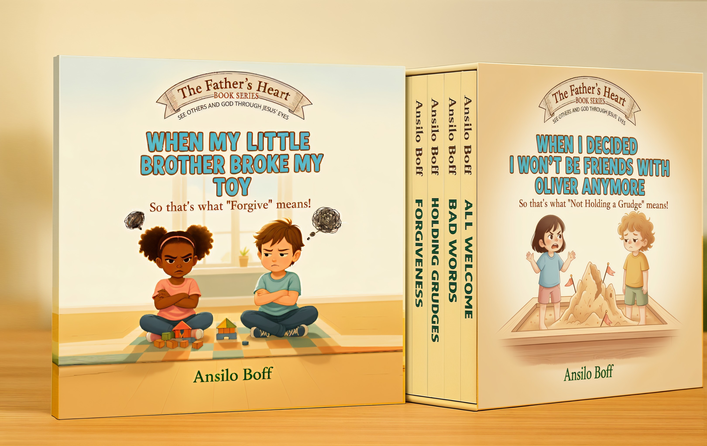

See others and God through Jesus' eyes.
What if the stories we tell about God helped children feel safe, kind, and deeply loved?
In The Father's Heart Series, Ansilo Boff re-introduces children to the gentle, forgiving Father that Jesus revealed — not a God of punishment or fear, but one of peace, mercy, and inclusion.
Through tender storytelling and luminous watercolor illustrations, each book turns everyday moments into spiritual discoveries: forgiving a friend, using kind words, feeling peace during storms, sharing what we have, and welcoming others at our table.
Every page helps children (and parents) unlearn fear and rediscover love.
Because when we see others — and God — through Jesus' eyes, the world becomes a brighter, kinder place.
Perfect for bedtime reading, family devotion, or Sunday-school story time, The Father's Heart Series nurtures young hearts to grow in empathy, peace, and joy.